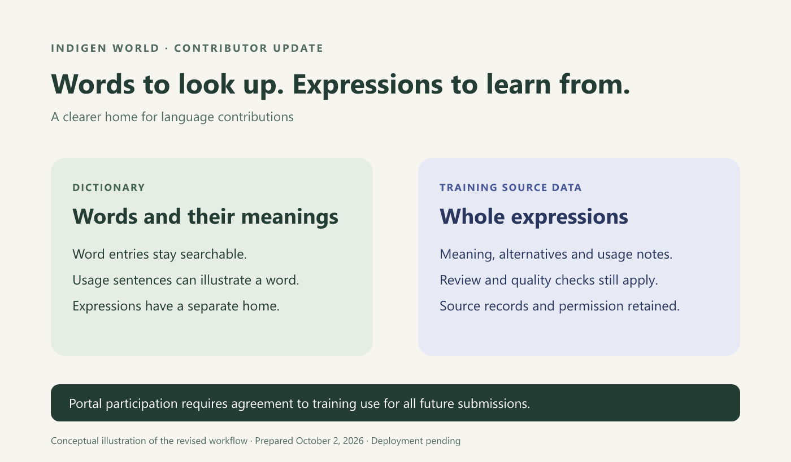
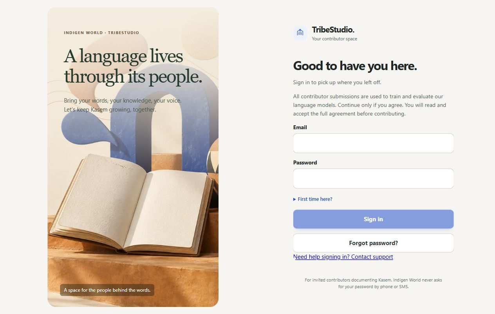

A dictionary should help you look up words. Complete expressions and sentence translations belong in the language data our models learn from. We have prepared an update that makes that distinction clearer and explains the purpose of the contributor portal before anyone starts work.
Release status: these changes are implemented in the repository. Production deployment, cleanup of older dictionary copies and the app release are pending.

The updated dictionary readers leave out records marked as expressions, phrases, idioms or proverbs. Words remain available with their meanings, pronunciation information and usage examples. Classification uses the record’s type and source; a space in a legitimate word entry is not enough to remove it.
Reviewed expression contributions are kept whole and routed to the separate expression collection. Their punctuation, alternatives and meaning are preserved. A cleanup tool is ready to retire older expression copies from the dictionary while keeping the original submissions and their recorded permissions.
The invited contributor portal now explains that all future language and cultural submissions will be used to train and evaluate Indigen World language models, including Kawuri. New contributors read and accept this agreement during activation. Existing contributors must accept it before continuing.
If you do not want your contributions used for model training, do not continue as a contributor. The agreement is required, and the portal offers a clear way to leave.

After accepting the agreement, open an assignment, write your translation and add any alternatives or usage notes. Confirm that you have permission to share the material, then submit it for review. There is no separate optional AI-training checkbox on each portal submission.
Review and quality checks still determine which examples enter a training dataset. Preparing eligible source data does not mean a model has already been trained. Earlier submissions keep their original permissions; accepting the new agreement does not rewrite an earlier refusal.
This agreement covers contributed content. Passwords, contact details, payment information and support messages are not training contributions. The change described here applies to the invited contributor portal; other contribution workflows retain their own permission requirements.